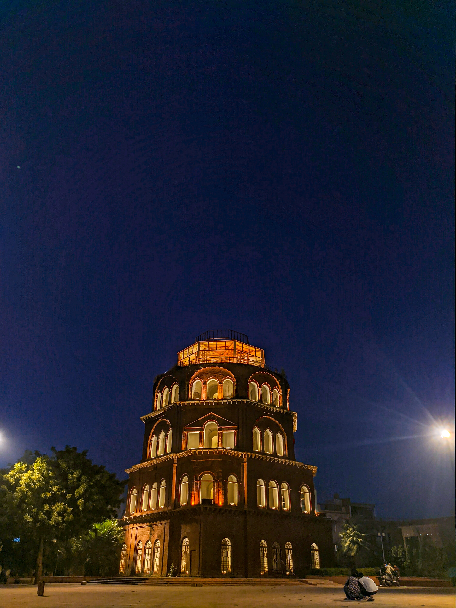

Lucknow is the capital and the largest city of the Indian state of Uttar Pradesh and it is also the second largest urban agglomeration in Uttar Pradesh.Lucknow is the administrative headquarters of the eponymous district and division. Having a population of 2.8 million as per 2011 census, it is the eleventh most populous city and the twelfth-most populous urban agglomeration of India. Lucknow has always been a multicultural city that flourished as a North Indian cultural and artistic hub, and the seat of power of Nawabs in the 18th and 19th centuries.It continues to be an important centre of governance, administration, education, commerce, aerospace, finance, pharmaceuticals, technology, design, culture, tourism, music, and poetry.
Lucknow stands at an elevation of approximately 123 metres (404 ft) above sea level. The city had an area of 402 km2 (155 square miles) until December 2019, when 88 villages were added to the municipal limits and the area increased to 631 km2 (244 square miles). Bounded on the east by Barabanki, on the west by Unnao, on the south by Raebareli and in the north by Sitapur and Hardoi, Lucknow sits on the northwestern shore of the Gomti River. As of 2008, there were 110 wards in the city. Morphologically, three clear demarcations exist: The Central business district, which is a fully built up area, comprises Hazratganj, Aminabad and Chowk. A middle zone surrounds the inner zone with concrete houses while the outer zone consists of slums.
|
 | |
|